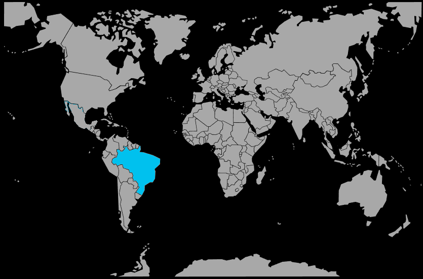

Systématique
- Ordre : Siluriformes
- Famille : Loricariidae
- Sous‑famille : Hypoptopomatinae
- Genre : Otocinclus
- Espèce : Otocinclus affinis
Otocinclus affinis est un petit poisson‑chat cuirassé sud‑américain, atteignant environ 4 à 5 cm, très apprécié en aquariophilie pour son comportement pacifique et son appétit pour les algues vertes.
Son corps allongé est recouvert de plaques osseuses et orné d'une bande latérale sombre, avec une bouche ventrale en ventouse lui permettant de se fixer aux surfaces pour brouter le biofilm.
L'espèce est grégaire, diurne et doit impérativement être maintenue en groupe d'au moins 6 individus pour éviter le stress et les maladies; elle occupe principalement les zones basses de l'aquarium, se fixant aux plantes, racines et vitres.
Elle est capable de respirer de l'air en surface grâce à une poche intestinale spécialisée, une adaptation aux milieux pauvres en oxygène; elle cohabite parfaitement avec des crevettes et des petits poissons paisibles.
Mode : ovipare, pondeur sur substrat découvert; la femelle dépose une cinquantaine d'œufs sur les plantes, les vitres ou des supports lisses.
Pour déclencher la ponte, un refroidissement de l'eau de 2 à 3 °C et un adoucissement par changement d'eau sont généralement efficaces; les œufs éclosent en 3 à 4 jours, mais la reproduction reste peu pratiquée et difficile en aquarium amateur.
Dimorphisme sexuel : les femelles sont légèrement plus grandes et plus rondes vues de dessus, avec un abdomen plus rebondi, surtout en période de reproduction.
Espérance de vie : environ 5 à 10 ans en captivité dans de bonnes conditions de maintenance, avec une eau propre et une alimentation adaptée.
Otocinclus affinis fréquente les zones peu profondes et calmes de petits cours d'eau forestiers à eau noire ou claire, riches en végétation aquatique et en débris végétaux où prolifèrent algues et biofilm.
Répartition
Origine naturelle :
- Côte atlantique du Brésil, États de Rio de Janeiro et São Paulo.
- Cours d'eau côtiers et petits affluents forestiers près de la région de Santa Cruz, Rio de Janeiro.
- Ruisseaux de faible altitude à proximité de l'océan Atlantique.
L'espèce est endémique d'une zone restreinte du sud‑est brésilien et a longtemps été confondue avec d'autres Otocinclus; les populations du bassin du Paraná précédemment attribuées à cette espèce appartiennent en réalité à Otocinclus arnoldi.
Paramètres de maintenance
Température : 20 à 26 °C, voire jusqu'à 28 °C.
pH : 5,5 à 7,5, de légèrement acide à neutre.
GH : 5 à 19 °dGH, eau douce à moyennement dure.
Courant : faible à modéré, avec une bonne oxygénation et de nombreuses plantes et surfaces pour le broutage.
Volume conseillé : au minimum 80 à 90 L pour un groupe de 6 individus, très bien planté.
Régime alimentaire
Régime : herbivore alguivore; il broute les algues vertes, le biofilm et les micro‑organismes présents sur les feuilles, racines et surfaces immergées.
En aquarium, il faut impérativement compléter son alimentation avec des tranches de concombre, courgette, épinard poché, spiruline et comprimés végétaux, car un bac ne contient jamais assez d'algues pour nourrir un groupe.
Une eau mature, des plantes abondantes et des apports réguliers de nourriture végétale sont indispensables pour éviter la malnutrition, principale cause de mortalité chez cette espèce en captivité.